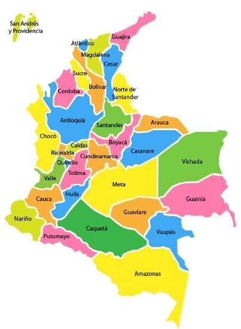

Haz clic en los marcadores del mapa territorial
Selecciona una región
Haz clic en cualquier punto rojo del mapa o búscalo en la lista para cargar su memoria histórica e impactos del conflicto armado.
Haz clic en los puntos rojos directamente sobre el mapa o utiliza el panel lateral para explorar la historia y archivos de prensa/investigación verificados de cada territorio.

Haz clic en los marcadores del mapa territorial
Haz clic en cualquier punto rojo del mapa o búscalo en la lista para cargar su memoria histórica e impactos del conflicto armado.